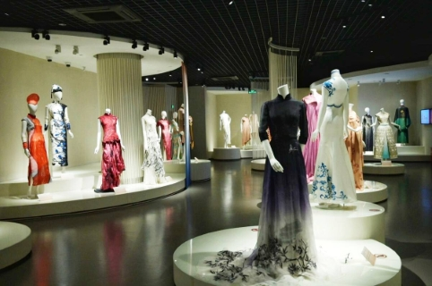

China Silk Museum: A museum with artistic exhibitions of ancient and modern fashion of silks
The China National Silk Museum, located in Hangzhou, Zhejiang Province, is the largest silk museum in the world. Established in 1992, this national-level museum covers an area of 50,000 square meters and is dedicated to the collection, protection, research, and display of silk and textile artifacts. The museum is situated near the picturesque West Lake, making it a perfect blend of cultural heritage and natural beauty. It features several permanent galleries, including "The Story of Chinese Silk," "Sericulture and Silk Craftsmanship in China," and the "Textile Conservation Gallery". These exhibits showcase the rich history of silk production in China, from ancient sericulture techniques to modern textile conservation methods. Visitors can also explore the Silk Road Gallery, which highlights the historical and cultural significance of the Silk Road, and the Fashion Gallery, which presents both traditional and contemporary silk costumes. The museum offers interactive experiences, such as hands-on weaving activities and demonstrations of silk dyeing techniques2.